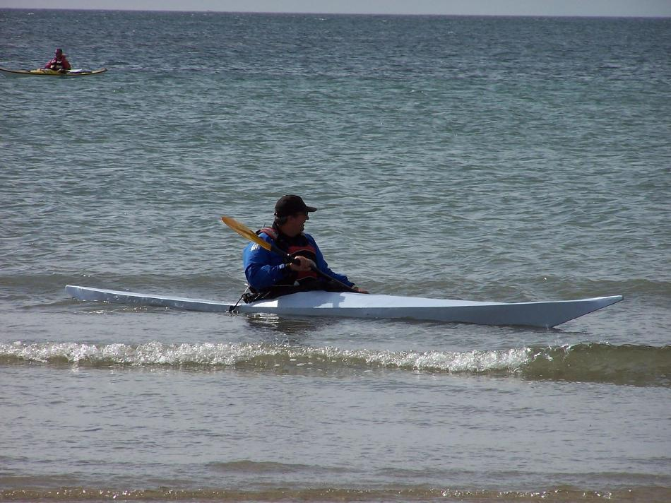

| Sea Ranger by Tony Hutchings (UK) | Menu Previous Page Next Page |
|

Tony, from Shoreham Beach, West Sussex, England has completed a modified wood frame Sea Ranger. He shortened the boat to 16.5ft and raised the bow slightly for playing in the surf. The gunwales are pine and the bulkhead's marine plywood. The skin is 10oz canvas treated with boiled linseed oil and white spirit, and then painted with a synthetic exterior coat. Tony reports that It was a very easy build and is great fun to paddle.
|
|